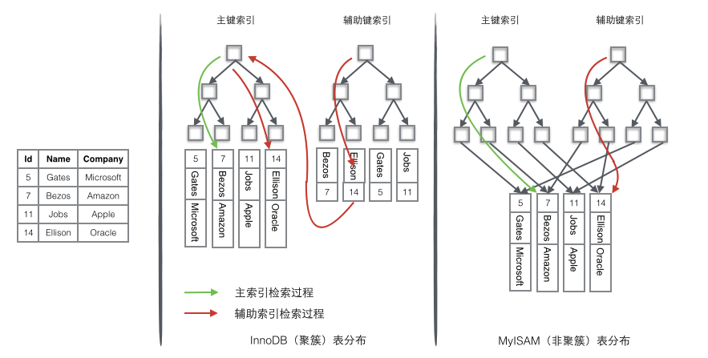
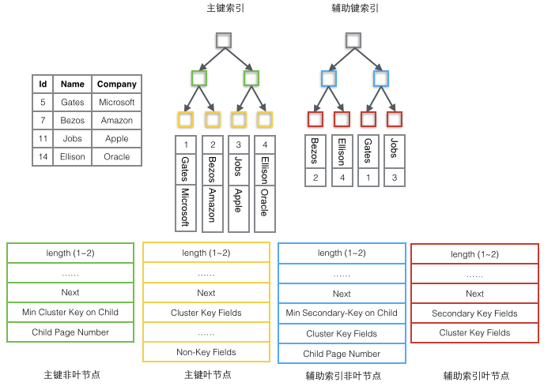

Ch05-MySQL 之 索引
March 31, 2018
InnoDB 索引选择B+树作为其内存数据结构，选择聚簇索引作为数据存储方式。
1. 索引数据组织形式 #
常见的索引数据组织形式有聚簇索引和非聚簇索引。
InnoDB 使用的是聚簇索引（clustered index），将主键组织到一棵 B+树中，而行数据就储存在叶子节点上，若使用”where id = 14”这样的条件查找主键，则按照 B+树的检索算法即可查找到对应的叶节点，之后获得行数据。若对 Name 列进行条件搜索，则需要两个步骤：第一步在辅助索引 B+树中检索 Name，到达其叶子节点获取对应的主键。第二步使用主键在主索引 B+树种再执行一次 B+树检索操作，最终到达叶子节点即可获取整行数据。
MyISM 使用的是非聚簇索引（secondary index），非聚簇索引的两棵 B+树看上去没什么不同，节点的结构完全一致只是存储的内容不同而已，主键索引 B+树的节点存储了主键，辅助键索引 B+树存储了辅助键。表数据存储在独立的地方，这两颗 B+树的叶子节点都使用一个地址指向真正的表数据，对于表数据来说，这两个键没有任何差别。由于索引树是独立的，通过辅助键检索无需访问主键的索引树。
下图左是聚簇索引的示例，右是非聚簇索引的示例。

2. 索引数据结构 #
MySQL 中一个 B+ 树节点是以 Segment 为单位加载进来的，而非 Page。叶子节点根据其功能从逻辑上可以划分为主索引树非叶节点，主索引树叶子节点，辅助索引树非叶节点，辅助索引树叶子节点。它们的关系如下图所示。

3. 索引分类 #
3.1 按照字段特性 #
| 条目 | 说明 |
|---|---|
| 主键索引 | 建立在主键上的索引，一张数据表只能有一个主键索引，索引列值不允许有空值，通常在创建表时一起创建 |
| 唯一索引 | 建立在 UNIQUE 字段上的索引，一张表可以有多个唯一索引，索引列值允许为空，列值中出现多个空值不会发生重复冲突 |
| 普通索引 | 建立在普通字段上的索引 |
| 前缀索引 | 前缀索引是指对字符类型字段的前几个字符或对二进制类型字段的前几个 bytes 建立的索引，而不是在整个字段上建索引 |
3.2 按索引字段个数 #
| 条目 | 说明 |
|---|---|
| 单列索引 | 建立在单个列上的索引 |
| 联合索引 | 建立在多个列上的索引 |